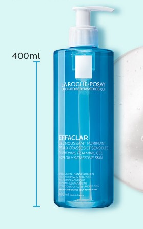
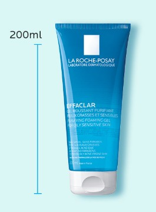

Gel rửa mặt La Roche-Posay Effaclar
399.000 ₫
Giá thị trường: 655.000 ₫ - Tiết kiệm: 256.000 ₫ (39%)
Dung tích: 400ml
Bạn muốn nhận hàng trước 16h hôm nay (Miễn phí). Đặt hàng trong 10 phút tới và chọn giao hàng 2H ở bước thanh toán.
Gel rửa mặt Effaclar Purifying Foaming Gel đến từ thương hiệu La Roche-Posay giúp làm sạch bụi bẩn, bã nhờn và tạp chất trên da. Sản phẩm phù hợp với da dầu và da nhạy cảm, giúp da sạch thoáng và giảm nguy cơ gây mụn.
- 400ml (Full size)
- 200ml (Mini size)


Gel rửa mặt La Roche-Posay Effaclar phù hợp với loại da nào?
- Phù hợp với da dầu, da hỗn hợp và da dễ bị mụn.
- Giúp làm sạch sâu nhưng vẫn giữ độ ẩm tự nhiên của da.
Đối tượng sử dụng Gel rửa mặt La Roche-Posay:
- Da dầu và da hỗn hợp thiên dầu
- Da dễ bị mụn và bít tắc lỗ chân lông
Thông số sản phẩm
| Barcode | 3337872411991 |
| Thương Hiệu | La Roche-Posay |
| Xuất xứ thương hiệu | France |
| Nơi sản xuất | France |
| Loại da | Da dầu / da nhạy cảm |
| Đặc tính | Làm sạch sâu – kiểm soát dầu |
Hỗ trợ khách hàng
Hotline: 0845628919
(Miễn phí 08-22h kể cả T7, CN)
Hướng dẫn đặt hàng
Phương thức thanh toán
Chính sách đổi trả
Cập nhật khuyến mãi
DANH MỤC SẢN PHẨM
Mỹ phẩm High-End
Chăm sóc cá nhân
Băng vệ sinh
Khử mùi
Nước hoa
Nước hoa nữ
Nước hoa nam